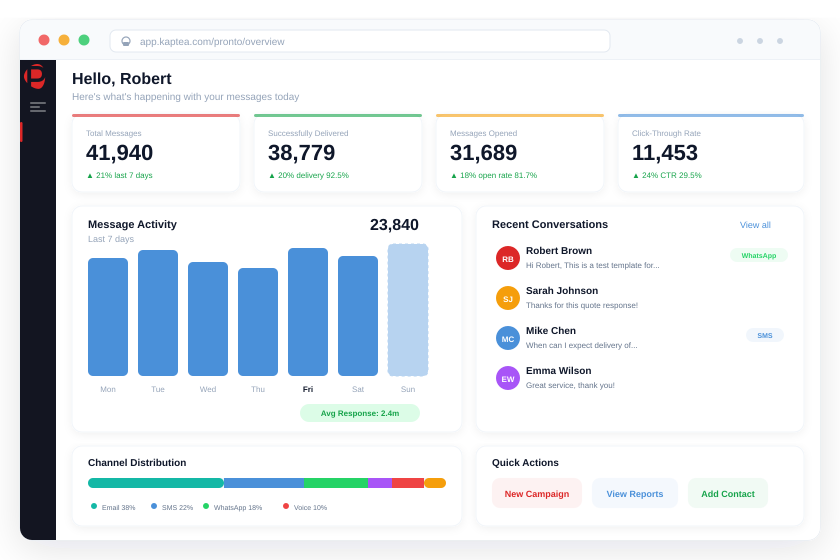

Voice & IVR that
bends to your needs,
not the other way round.
Fully customisable IVR orchestration on Twilio Programmable Voice. Smart skills-based routing, browser-based calling, call recording, AI transcription, and infrastructure that handles 750× surge volume without missing a beat.

Legacy IVR systems weren't built for the way regulated enterprises actually operate.
Rigid systems that can't be customised
Legacy IVR platforms are built on inflexible proprietary logic. Changing a menu option means a vendor ticket. Adding a routing rule means a project. Every customisation costs money and time, which means enterprises stop asking, and customers suffer the consequences.
Infrastructure that collapses under surge
A storm, an outage, a fraud wave: call volumes spike 100× overnight. Legacy telephony systems queue-drop, agents are overwhelmed, and the organisation loses control of its most critical customer touchpoint at exactly the wrong moment.
No visibility on what's actually happening
Call outcomes, agent performance, queue depth, recording access: scattered across different systems or unavailable entirely. Without a single source of truth for voice interactions, compliance, quality assurance, and management insight all suffer.
Programmable, resilient, and fully visible: from first ring to final transcript.
Fully customisable IVR on carrier-grade infrastructure
Kaptea is built on Twilio Programmable Voice, which means IVR flows are configured to your exact requirements, not constrained to a vendor's rigid menu structure. Routing logic, queue announcements, hold experiences, conditional branching, and call transfers can all be tailored per client, per department, or per event, and changed without raising a ticket.
- Customisable IVR menus, prompts, and call flows
- Conditional routing logic based on caller input, time, or queue state
- Queue position announcements and estimated wait times
- Hold music and comfort messaging configuration
- Inbound call handling via PSTN with global number support
- WebRTC browser-based calling (no desk phones or hardware required)
- Click-to-call outbound directly from the agent dashboard
Smart Task Router: the right agent, every time
Kaptea's Task Router distributes inbound calls based on real-time agent availability, skill set, current workload, and channel permissions, not just a simple round-robin. Agents who reject calls are moved to the back of the queue. Load is balanced dynamically across the team. The result is faster first contact, lower abandonment, and a fairer workload distribution.
Call recording, transcription, and AI-powered insights
Every call can be recorded automatically or manually, with pause and resume control available to the agent at any point during a conversation. Recordings are accessible for immediate playback and download from the call detail record, with no separate system and no delay. AI-powered transcription and Twilio Conversation Intelligence layer on sentiment analysis, intent detection, and contact-level summaries for QA and compliance teams.
- Automatic or agent-controlled call recording with pause/resume
- Immediate recording playback and download from call record
- AI call transcription with full searchable text
- Sentiment analysis and intent detection per conversation
- AI-generated contact summaries for agent context
- Call duration, direction, and outcome tracked per interaction
- Exportable records for compliance, QA, and regulatory reporting
Voice as part of a unified omnichannel platform
Voice on Kaptea isn't a standalone module; it sits inside Pronto's unified inbox alongside SMS, WhatsApp, and email. Agents handle calls, messages, and digital conversations from a single screen, with the full interaction history visible regardless of channel. CRM integrations mean every call is connected to the right record, and every outcome is captured without manual input.
- Unified inbox: voice alongside WhatsApp, SMS, and email
- Full cross-channel interaction history per contact
- CRM integrations: Salesforce, Dynamics 365, HubSpot, Zoho, SAP
- Inbound call triggers CRM record lookup and screen-pop
- Call outcomes, duration, and recording links written back to CRM
- Event streaming: call events to Slack, Kafka, Webhook, PagerDuty
- Agent performance analytics and call volume dashboards
750×
Surge call volume handled
without degradation or dropped queues
Zero
Desk phones or hardware
required. WebRTC browser calling
8 weeks
From contract signature
to live IVR deployment
10/10
NPS from IVR customers on
flexibility and responsiveness
"When a major storm hit, call volumes went up 750 times overnight. The platform didn't flinch. Every alert, every outbound message, every inbound call: handled without a single escalation to us."
Operations Director
Regional electricity network operator, Northern Ireland, Utilities & Energy
"There was very much a can-do attitude, not 'that's going to be tricky' or 'that's going to be expensive.' What are you trying to achieve? How can we help fill that gap?"
Commercial Lead
International restaurant reservation platform
750×
Surge volume during a major storm event, with no degradation and no missed calls
10/10
NPS on IVR flexibility and Kaptea's implementation approach
Days
SLA for IVR customisation requests: hours to same-day turnaround
8 wks
Typical deployment from contract to live IVR with full routing configured
What IVR customers say about Kaptea
"We were seeing 60% of customer calls abandon before reaching an agent. After switching to Kaptea's IVR, we're down to under 7%. It completely transformed the customer experience and our revenue."
"Our previous IVR provider simply couldn't customise anything. With Kaptea, whatever flow we describe (CRM handoffs, commerce lookups, conditional routing) they just build it."
"There was very much a can-do attitude, not 'that's going to be tricky.' Just: what are you trying to achieve, how can we help?"
Common questions about Voice & IVR
IVR that works the way your organisation works.
See how Kaptea delivers fully customisable voice and IVR orchestration, built for regulated industries, engineered for surge.
Book a Demo